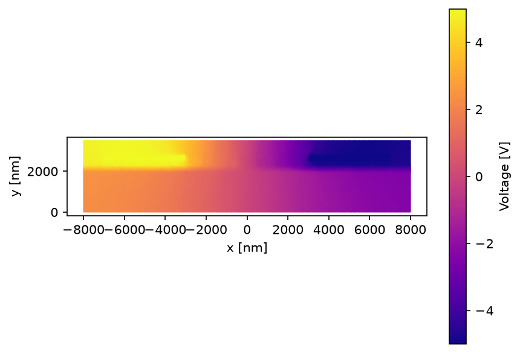
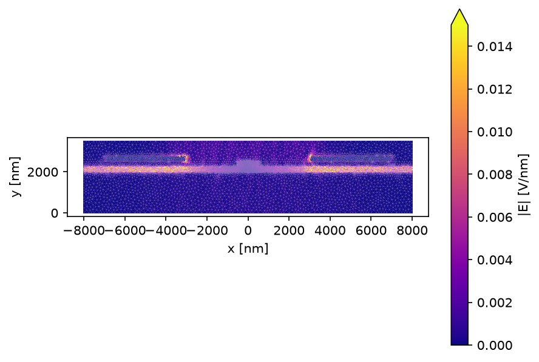
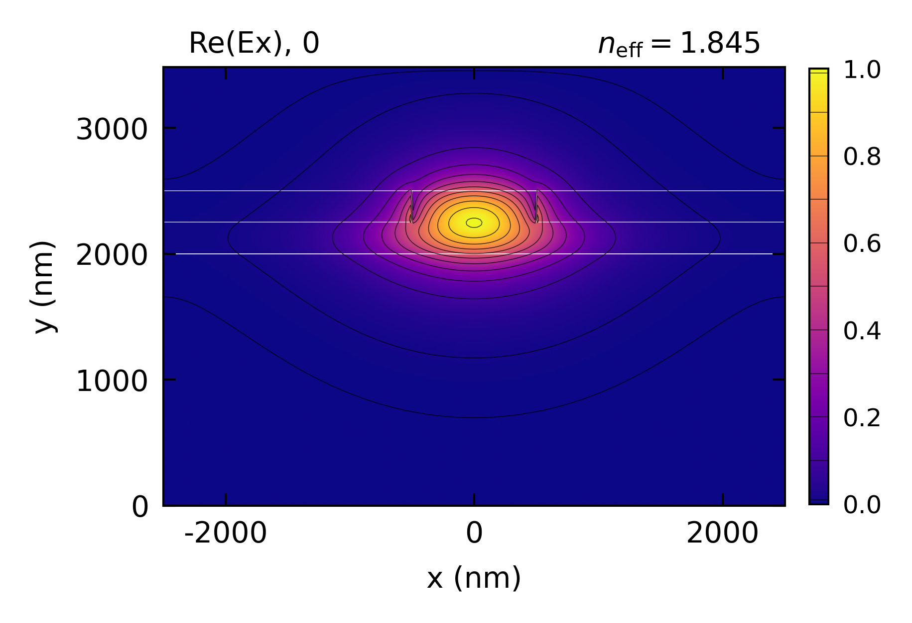

Multi-physics: Phase Shifter
Highlighted features: heat_only electrodes, voltage, electrostatic(), the linear electro-optic (Pockels) effect, and VpiL for an x-cut LNOI phase shifter.
This code example is licensed under the BSD 3-Clause License.
import emodeconnection as emc
import matplotlib.pyplot as plt
import numpy as np
## Simulation parameters
wavelength = 1550 # [nm]
dx, dy = 20, 20 # [nm] resolution
w_core, h_film, h_ridge = 1000, 500, 250 # [nm] 1 um ridge etched 250 nm into a 500 nm film
h_box, h_tclad = 2000, 1000 # [nm] SiO2 cladding above and below the film
w_el, h_el = 4000, 300 # [nm] Au electrodes
gap = 2500 # [nm] gap from the ridge edge to the nearest electrode edge
V = 10.0 # [V] applied between the two electrodes
opt_width = w_core + 2 * 2000 # [nm] optical window: wide enough for the mode
es_width = w_core + 2 * gap + 2 * w_el + 2000 # [nm] electrostatic window: spans both electrodes
window_height = h_box + h_film + h_tclad
## Connect and initialize EMode
em = emc.EMode()
em.settings(
wavelength=wavelength,
x_resolution=dx,
y_resolution=dy,
num_modes=1,
background_material='SiO2',
window_width=opt_width,
window_height=window_height,
)
## x-cut LNOI ridge: the optic axis (z, extraordinary) lies along sim-x.
ln_x_cut = emc.MaterialSpec(material='LN_MgO', theta=np.pi / 2)
em.shape(name='BOX', material='SiO2', height=h_box, fem_resolution=300)
em.shape(
name='LN',
material=ln_x_cut,
fill_material='SiO2',
height=h_film,
mask=w_core,
etch_depth=h_ridge,
fem_resolution=40,
)
em.shape(name='tclad', material='SiO2', height=h_tclad, fem_resolution=300)
## Au electrodes beside the ridge, out of the optical mesh (heat_only), at +-V/2.
y_el = h_box + h_film + h_el / 2
x_el = w_core / 2 + gap + w_el / 2
em.shape(
name='electrode_L',
material='Au',
width=w_el,
height=h_el,
position=(-x_el, y_el),
voltage=V / 2,
fem_resolution=100,
heat_only=True,
)
em.shape(
name='electrode_R',
material='Au',
width=w_el,
height=h_el,
position=(x_el, y_el),
voltage=-V / 2,
fem_resolution=100,
heat_only=True,
)
## Unbiased mode
em.FDM()
em.report()
n0 = em.get('effective_index')[0]
## Electrostatic solve: a wider window so both electrodes are inside the mesh
em.settings(window_width=es_width)
static_data = em.electrostatic()
## Biased mode, back on the optical window: FDM folds the r-tensor perturbation in
## automatically. The bias makes the permittivity a full tensor, so this solve is
## slower than the unbiased one.
em.settings(window_width=opt_width)
em.FDM()
em.report()
nV = em.get('effective_index')[0]
dn = nV - n0
## V_pi*L is independent of length: a length L giving a pi phase shift at
## voltage V satisfies (2*pi/wavelength) * dn * L = pi, so V*L = V * wavelength / (2*dn)
V_pi_L_V_cm = V * wavelength * 1e-9 / (2 * abs(dn)) * 1e2 # [nm] -> [m] -> [cm]
print(f'Effective index shift at {V:.0f} V: {dn:.2e}')
print(f'V_pi * L: {V_pi_L_V_cm:.2f} V*cm')
## Voltage map
fig, ax = plt.subplots()
im = ax.tripcolor(
static_data['p'][0],
static_data['p'][1],
static_data['t'].T,
static_data['voltage'],
cmap='plasma',
shading='gouraud',
)
ax.set_aspect('equal')
ax.set_xlabel('x [nm]')
ax.set_ylabel('y [nm]')
fig.colorbar(im, ax=ax, label='Voltage [V]')
fig.savefig('phase_shifter_voltage.png', dpi=150, bbox_inches='tight')
## Field magnitude map (per-element, so plotted at the mesh element centroids).
## The color scale is capped below the peak: the field diverges at the electrode
## corners, which would otherwise wash out the waveguide.
E_mag = np.hypot(static_data['Ex'], static_data['Ey'])
fig, ax = plt.subplots()
im = ax.tripcolor(
static_data['p'][0],
static_data['p'][1],
static_data['t'].T,
facecolors=E_mag,
cmap='plasma',
vmin=0,
vmax=0.015,
)
ax.triplot(
static_data['p'][0], static_data['p'][1], static_data['t'].T, color='w', lw=0.15, alpha=0.4
)
ax.set_aspect('equal')
ax.set_xlabel('x [nm]')
ax.set_ylabel('y [nm]')
fig.colorbar(im, ax=ax, label='|E| [V/nm]', extend='max')
fig.savefig('phase_shifter_field.png', dpi=150, bbox_inches='tight')
em.plot()
em.close()
Console output:
EMode3D 1.0.4 - email
Meshing completed in 1.1 sec
Solving modes completed in 3.0 sec
Wavelength: 1550.0 nm
Mode # n_eff TE % Loss (dB/m)
-------- -------- ------ -------------
TE-0 1.844836 99.6 % 0.000
Solving electrostatic completed in 0.2 sec
Meshing completed in 1.1 sec
Solving modes completed in 10.8 sec
Wavelength: 1550.0 nm
Mode # n_eff TE % Loss (dB/m)
-------- -------- ------ -------------
TE-0 1.844692 99.6 % 0.000
Exited EMode
Effective index shift at 10 V: -1.44e-04
V_pi * L: 5.39 V*cm
Figures:


